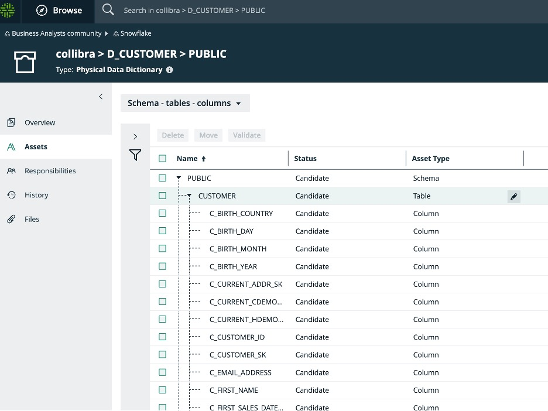
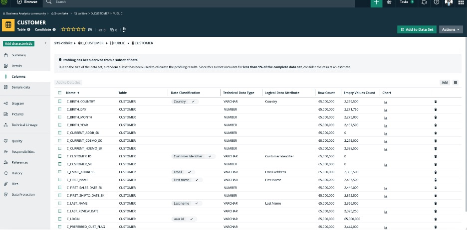
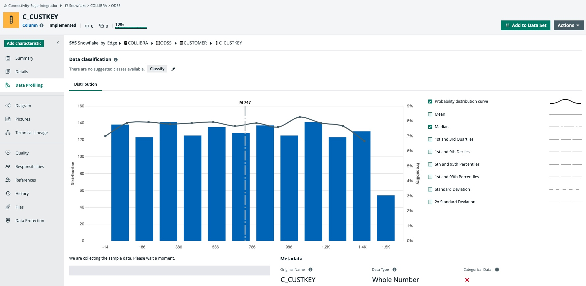
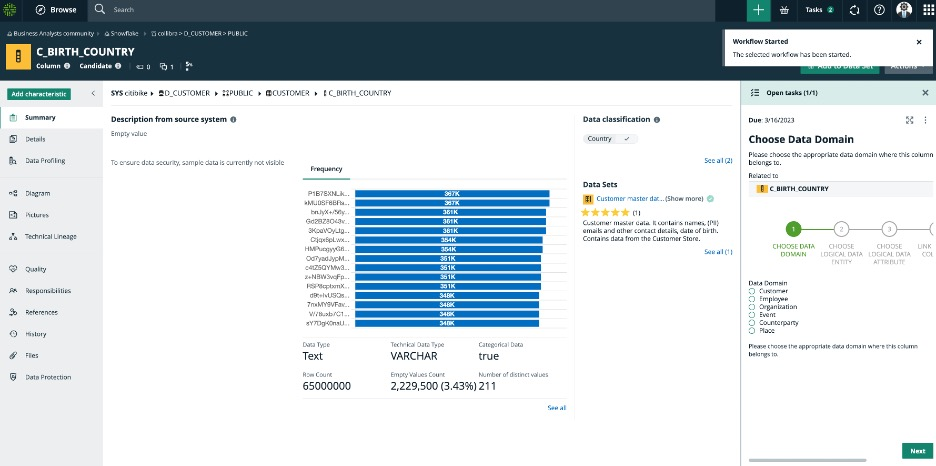
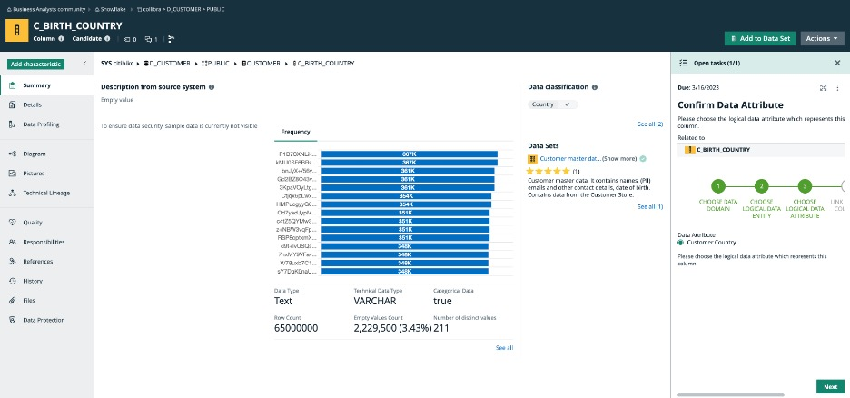
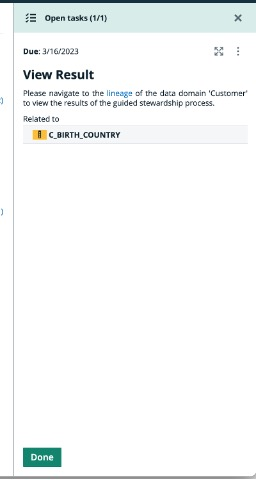
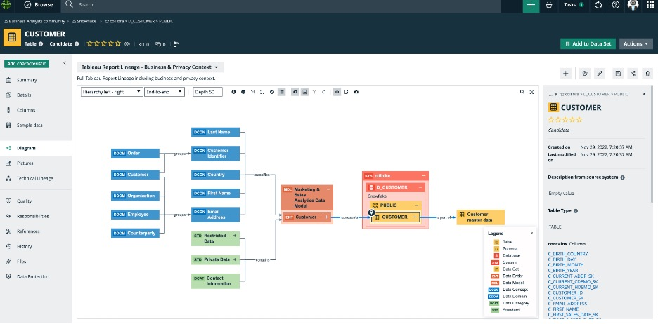
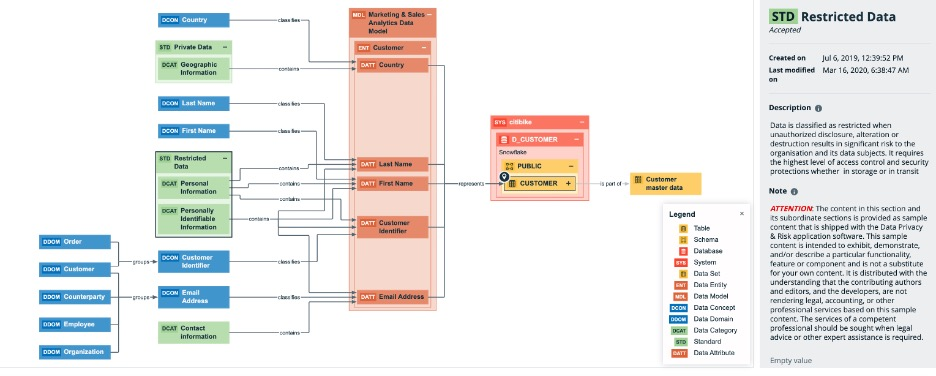

author: id: collibra summary: This is a sample Snowflake Guide to show how a user can work with Collibra in integration with Snowflake. categories: Getting-Started environments: web status: Published feedback link: https://github.com/Snowflake-Labs/sfguides/issues tags: Getting Started, Data Science, Data Engineering, Twitter
Duration: 1
This is a guide on how to catalog Snowflake data into Collibra, link the data to business and logical context, create and enforce policies. Also we will show how a user can search and find data in Collibra, request access and go directly to the data in Snowflake with access policies automatically enforced.
Duration: 2
It is important to set the correct metadata for your Snowflake Guide. The metadata contains all the information required for listing and publishing your guide and includes the following:
summary:
categories:
environments:
web . All work is done on the web, and there is no need to install anything locally on your computer.status: Draft
feedback link: https://github.com/Snowflake-Labs/sfguides/issues
tags: Getting Started, Data Science, Twitter, Data Governance, Data Intelligence, Data Privacy, Data Mesh
authors:
Duration: 2
In this step we will import into Collibra the techincal metadata of the Snowflake database. We will use Collibra Edge, which is an Integration Hub residing within the customer firewall for safety. This integration hub retrieves the Snowflake metadata using native JDBC drivers.
Go to Collibra and click on Catalog to start the ingestion:
Click on the plus sign to choose the database:

Choose register through Edge and choose the Snowflake option (first option)

Go to the Snowflake Community and look for the D_CUSTOMER database:

Duration: 2
At this step we will relate the newly ingested technical metadata to its logical and business context.
After technical metadata ingestion, go to the Collibra Catalog and look for the new database:

Click on the table CUSTOMER and in the detailed view of this asset click on “Columns”:

In this page you will see information for each column, including sampling and profiling if the ingestion was done using this option. Next to each column there is the option to classify the data. You can start the automatic classification of the data by clicking on “Actions” and then clicking on “Classify”. Then some columns will get a data class with a percentage next to the data class specifying the probability Collibra thinks this is the right data class.
For example next to the column C_BIRTH_COUNTRY there is the data classification “Country”. We have accepted it as a data class appropriate for this column.

Every time you accept or reject the data class, then Collibra’s AI/ML engine will keep in memory the selections and when new data get ingested, these selections will be used to improve the probabilities for the data classes assigned.
You can click on the columns, for example the first one C_BIRTH_COUNTRY and then from the Actions menu choose the Guided Stewardship workflow that will guide us to assign the right data domain:

At this point the workflow starts and you simply have to decide which data domain this column belongs to. In this case it belongs to the Customer domain, so click on the customer radio button and click next.

In the next step we confirm that the data attribute is Country :

And then we can skip the next steps to complete the workflow.

Once this is completed then the user can see that the database is now linked to an ecosystem of logical and business context, as well as with data privacy rules and policies that were assigned to the logical attributes assigned to the columns. By clicking on the “Diagram” area you can see the full lineage, starting from the Customer table, linking it to the Customer data domain, which already belongs to the Marketing and Sales Department, which in turn is linked to Private and Restricted data policies and Data Privacy data categories.

One can expand further by clicking on the plus sign of the assets that have a plus sign, meaning that you can expand at will. For Example if you click on the plus sign of Customer logical entity :

Also you can expand on the Private Data policy and see that Country belongs to the Geographic Information Data Category and thus find what special data privacy context exists around some columns.
Duration: 2
In this stage, we will specifically define the Data Privacy policies and rules that will be automatically enforced in Snowflake directly from within Collibra.
Please click on the Collibra Protect option after clicking the nine dots all the way to the top right of the Collibra User Interface:

This will take you to the Collibra Protect environment, then click on the Data Access Rules. And then click on Create a Data Access Rule button:

A form opens where you can create the new rule.
Type the name of the rule, its description. This is a rule about Marketing people. All people within Marketing will have access to this customer dataset, however we will enforce the hiding or masking of the Last Name column and we will only allow users to see customers from the country Belgium. We will choose the user group BE_MKT_ANALYST, in which will belong all marketing analysts in Belgium. You can fill in as follows:

At this point you can click on “Generate Preview” to see which columns will be viewed and which will be filtered and masked:


Click on Save Rule for the rule to be save. At this point the creation of this rule is sent to Collibra and the synchronization via API to the Snowflake environment is in Pending state. The synchronization happens automatically every 60 minutes.

If you need to expedite the synchronization of the new rules, you can trigger them via a POST command as follows from an API posting software:

This synchronization is triggered and within less than a minute we see that the rule is no longer in pending state but it is in effect:

We can simply check this if we login to Snowflake and go to D_CUSTOMER database, choose the PUBLIC schema and open the CUSTOMER table. Go to Preview and choose the BE_MKT_WH and also choose the role BE_MKT_ANALYST. Then you should be able to see the columns except for Last Name which is masked while all the rows are filtered for country Belgium.
Duration: 2
In this chapter we will look into how a user can search and find trusted data to use and request access to the data while at the same time policies will be automatically enforced.
David, the marketing analyst from Sweden is looking for customer data that is trusted and contain email and first name and birthdate at the minimum.
In Collibra Data Marketplace the user is searching for customer data:

Filters the search by pressing the Data Sets tab and the Certified option in the filters to the left.

The second dataset is the one that seems proper since in the description it states that it contains names, birthdates and emails.

Clicking on the columns we confirm this is the right set:

Clicking on the Go to Asset Details we can discover more about this dataset. It belongs to the Customer Domain, we see the name of the Data Owner, the rating:

If the user clicks on the “Diagram” to the left it is possible to see the full lineage of the dataset, that includes the logical, the business, the data quality and data privacy context.
What we can see in this diagram, is the connection of the dataset to the columns and tables and systems it draws its data from. Then the connection of these technical metadata to the logical definitions and consequently to the business context. Also linked to the logical definitions we can see the data privacy rules.

Also you can click at the Data Protection tab all the way to the bottom left, and this will show the policies and restrictions associated with this dataset.

As you can see Collibra allows you to see the lineage of a dataset in relation to its technical contents and in extension to its business and data privacy context. For example we can see that the columns that represent Last Name and Country each has a policy.
The user can add the dataset into the Data Basket by pressing the “Add to Data Basket” button:


This brings the dataset to the user’s personal Data Basket:

By clicking at the Data Basket icon we go to the area where we can start requesting the dataset(s).
The user can then choose the dataset and click on the “Checkout Data Basket” in order to start requesting access to the dataset.

By clicking Submit at the end of this form, a workflow starts which sends a notification to the dataset Data Owner, requesting access to the dataset:

The Data Owner will see the request and will evaluate if this user can get access to the dataset.
The Data Owner will then go to the dataset asset to check about policies and groups associated with this dataset. This will take us to the Collibra Protect rule that the Data Owner can check in detail:

In this case we see that this rule is about granting access to the dataset Customer master data to all people who work in the Marketing department, while there is default masking policy for the Last Name and the only customer rows shown are filtered by country, in this case Sweden.
Therefore the Data Owner understands that the user should be granted the SE_MKT_ANALYST role in Snowflake in order to get access to this dataset.
The Data Owner sends an approval notice to the requester, asking the requester to first accept the terms and conditions of accessing this dataset:

The requester will then receive the task to accept the terms and conditions in order for access to be granted. The user checks the “All of the above” radio button and clicks on the Accept Notice button to proceed.
At this point the Data Owner receives notification that the requester accepted the conditions and goes to Snowflake to grant to the requester the role “SE_MKT_ANALYST”.
Go to Snowflake in the area Users and Roles and Search for the user to which we are going to grant access. Then click on the three dots to the right of the user and choose the Grant Role option in order to grant the Role to the User.

At this point look for the Role in Collibra which gives access with enforced policies to a user, in this case the SE_MKT_ANALYST.

Now the user David will be able to login to Snowflake and access the table D_CUSTOMER with his role SE_MKT_ANALYST, and see the data with the enforced policies. First look for “Data”, then choose D_CUSTOMER, then choose the schema “Public” then choose the warehouse SE_MKT_WH, then Preview Data. As you can see the Last name is hidden:

And also the country is filtered to include customers from Sweden only:

Duration: 2
In this lab we learned how to catalog Snwoflake data, how to link this data to its business context, how to enforce privacy policies on it and how to search and access it.